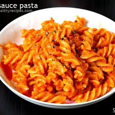
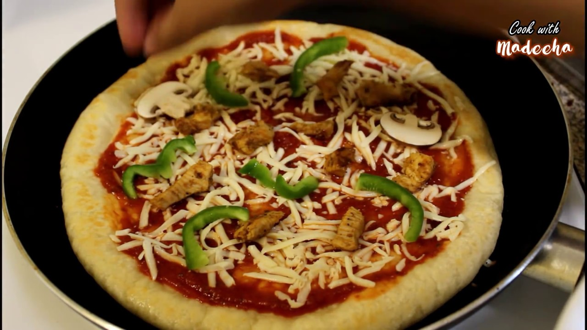

Italian recipes
Pasta in white sauce

Ingredients:
- 2 cups penne pasta, 200 grams,
- 2 tablespoons butter
- 1 small red onion, diced or chopped
- 1 small red pepper, sliced
- 1 small green pepper, sliced
- 3/4 cup broccoli florets, optional
- 1 tablespoons oil
- 4-5 large garlic cloves, finely chopped
- 1.5 tablespoon all purpose flour, also known as maida
- 1.5 cups milk, warm
- 1/2 cup heavy cream, or use milk, cream makes it more creamier
- 1 teaspoon dried oregano
- 1 teaspoon Italian seasoning
- 1/2 teaspoon red chili flakes, optional
- salt, to taste
- black pepper, to taste
- 1/2 cup grated processed cheese,
Procedure:
- Boil the pasta according to instructions on the package and drain. Note: use only 1 cup pasta if you like more sauce in your pasta. While the pasta is boiling chop all the veggies.
- Melt 1 tablespoon of butter in a pan on medium heat. Add all the veggies - onion, peppers and broccoli and cook for 2 minutes. You want veggies to remain crunchy. Remove the veggies from pan and set aside.
- To the same pan, now add olive oil and the remaining tablespoon of butter. Once the butter melts, add the chopped garlic and cook for 2 minutes until fragrant.
- Then add in the flour. Whisk the flour continuously, using a wire whisk for around 1 minute. You don't have to brown the flour.
- Then add the in the milk and the cream. You can skip the cream and use only milk here.Whisk to combine. Let the sauce simmer for 2 minutes.The sauce will thicken and coat the back of the spoon.
- Add oregano, Italian seasoning, red chili flakes (if using) and mix. Also add salt and black pepper to the sauce.
- Let the sauce simmer on medium heat another minute or so and then add the cheese (if using) and mix until it melts. Now turn the heat to the lowest.
- Stir in the boiled pasta and the sauteed veggies. Toss until the pasta and veggies are coated with the sauce. Taste test and adjust the seasonings at this point. Serve white sauce pasta immediately out of the pan with parmesan cheese if needed. Tastes best when fresh. Enjoy!
Pasta in red sauce

Ingredients:
- 3 tomatoes, red and ripped
- 2 tsp olive oil
- 1 bay leaf / tej patta
- 2 cloves garlic, finely chopped
- ½ medium sized onion, finely chopped
- 1 tsp basil leaves, finely chopped
- ¼ tsp chili flakes
- ½ tsp mixed herbs
- salt to taste
- ¼ tsp pepper, crushed
- 3 tbsp parmesan cheese / any cheese, grated
- 1 cup penne pasta / any pasta of your choice
- 5 cups water or as required to boil
- salt to taste
Procedure:
- firstly, mark x on tomatoes and boil for 5 minutes.
- further peel off the skin and blend to smooth puree.
- meanwhile, in a large vessel cook penne pasta with some salt.
- cook the pasta for 10-12 minutes or till they are soft.
- finally, drain the pasta and keep aside.
- in a large kadai heat olive oil and saute bay leaf and garlic till they turn aromatic.
- also saute onions till they change colour.
- further add prepared tomato puree and saute for 5 minutes.
- also add basil leaves, chili flakes, mixed herbs, pepper, salt and mix well.
- cover and simmer for 10 minutes.
- and add in boiled pasta.
- mix gently, making sure the sauce has coated well.
- finally, serve red sauce pasta hot topped with parmesan cheese or any cheese of your choice.
Pizza on Tawa:

Ingredients:
- Pizza base: 2
- Grated mozzarella or pizza cheese: 1 cup
- Chopped onions: ¼ cup
- Chopped capsicum: ¼ cup
- Chopped mushrooms: ¼ cup
- Pizza sauce: 4 tbsp
- Italian seasoning
- Oil
- Salt
Procedure:
- Heat 1 tsp of oil in pan.
- Add chopped onions and mushrooms and saute for few minutes.
- Now add capsicum, salt and cook it more for a minute.
- Take the veggies out in a plate and let it cool down.
- Now heat pan on medium flame.
- Spread ½ tsp of oil on it and put the pizza base.
- Let the base cook for a minute or till you see light brown spots on down side.
- Now apply thin layer of oil on top and flip it over.
- Reduce the heat to medium low add spread pizza sauce, veggies, cheese and Italian seasoning.
- Cover the pan and cook pizza till cheese melts and base become little crisp.
- Pizza is ready to serve.